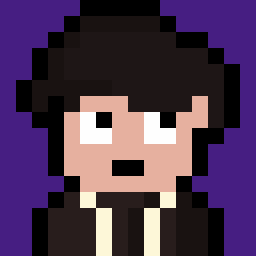
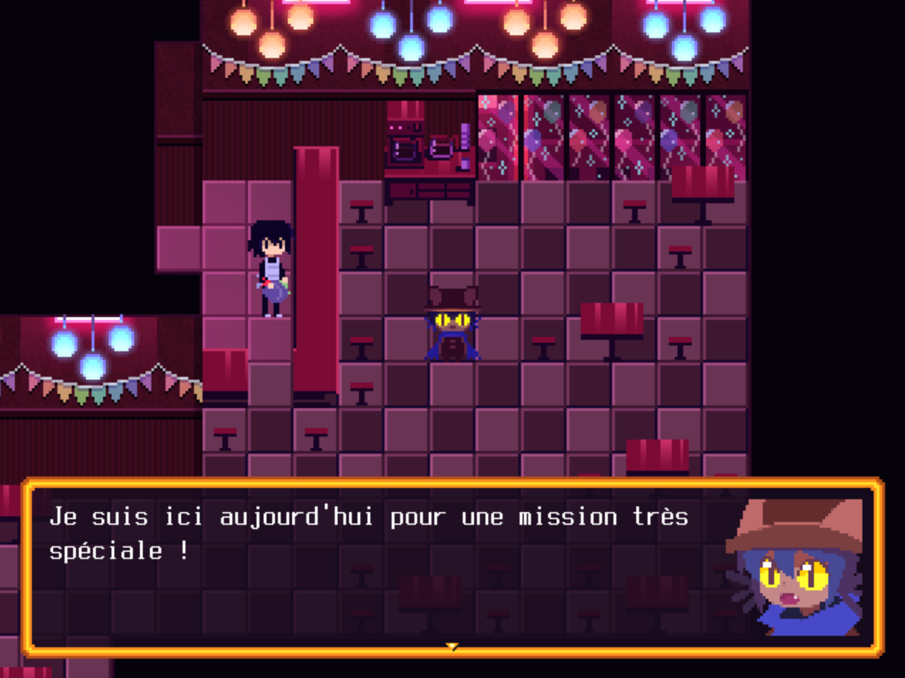
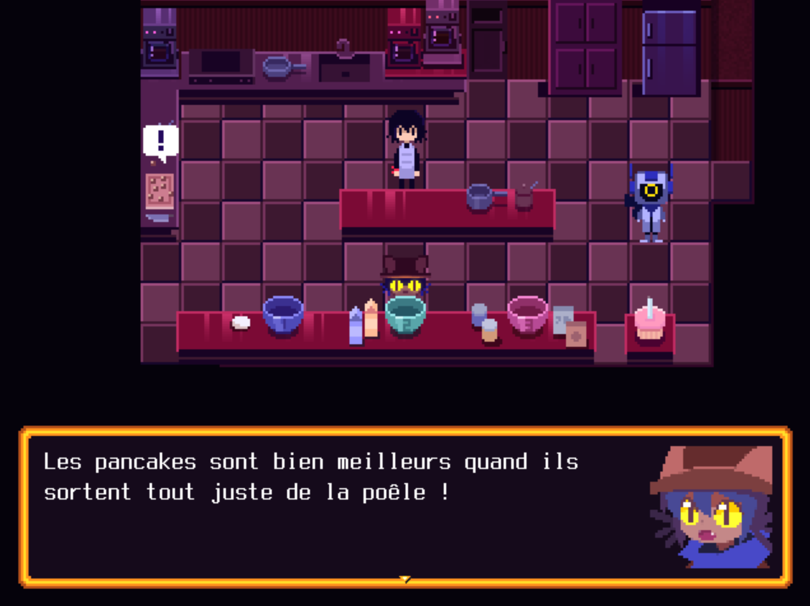
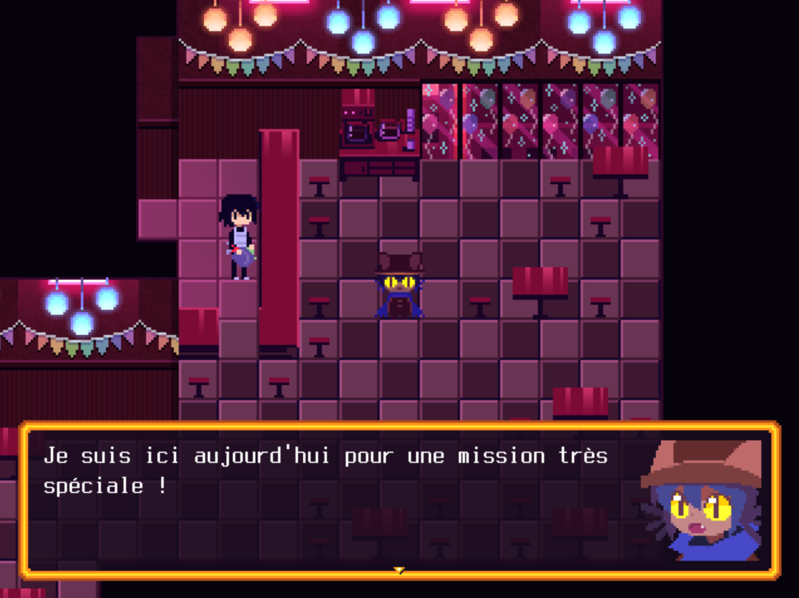
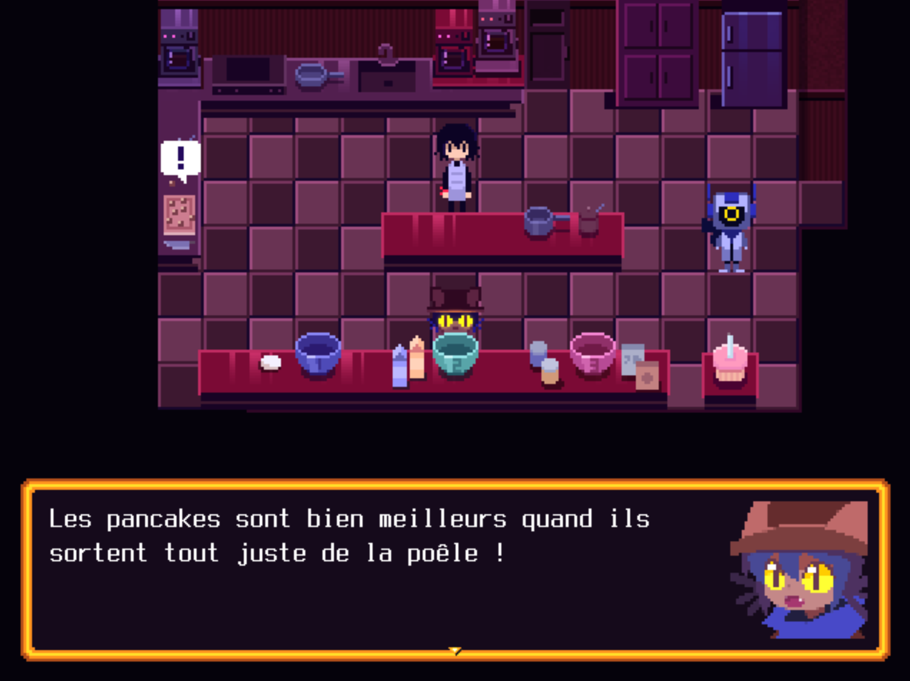

Un tout nouveau jeu dans l'univers de OneShot, maintenant disponible en
Français
Captures d'écran de la traduction
Comment installer la traduction ?
-
Téléchargez OneShot: Pancakes Episode sur
Itch.io

-
Téléchargez la traduction
ici
- Dézippez l'archive et lancez le fichier .exe< /li>
-
Sélectionnez le dossier dézippé de OneShot: Pancakes Episode puis
cliquez sur "Installer Le Patch".

-
Lancez le jeu, allez dans "Settings", puis "Language" et sélectionnez
"Français"
- Profitez du jeu en Français !
Cette traduction vous est présentée par...

Straky
Traducteur, Développeur

Lumap
Traducteur, Développeur

Technochips
Traducteur

Priax
Relecteur
© 2024, Straky (design et idée du site) et Lumap (programmation du site)
Site disponible sur
GitHub
et hébergé avec GitHub Pages
 


